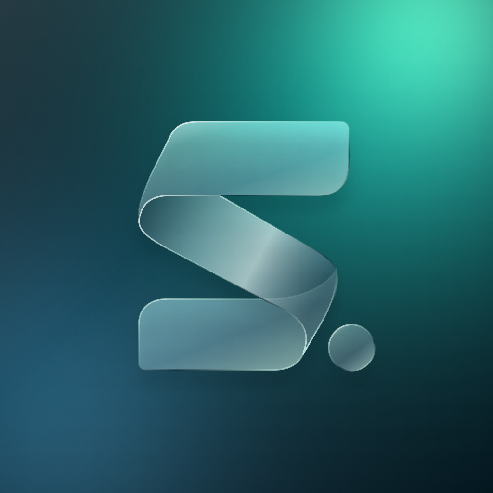
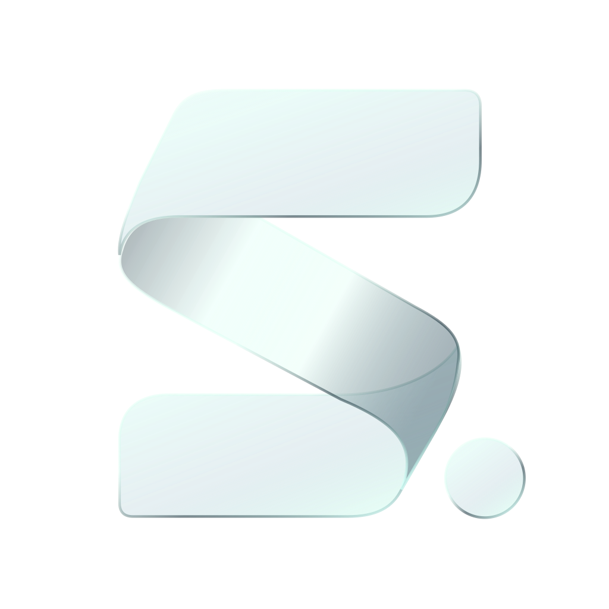
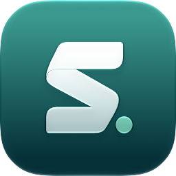

Hi Camille,
feedback received / thanks!
meet tomorrow to finish presentation
ask what time works
Speak soon,
Alex
Your Mac must keep up.
Ask, in your own words
Launch apps, rewrite text and automate tasks.
Say it, type it or use a shortcut.
Hi Camille,
v2.4 ready / Thursday 2pm UTC migration ~10 min if errors >1% → roll back ask Camille if she can monitor thank her for testing
Alex

Ask by VoiceYour shortcutTurn these notes into a friendly, clear email.
Thanks for testing v2.4! We’re ready to deploy on Thursday at 14:00 UTC. The migration should take about 10 minutes; we’ll roll back if errors exceed 1%. Could you keep an eye on the release?
The launcher
Open. Type. Go.
Search as fast as you type. skil.li learns what you pick, so the things
you use are easier to find next time.
 Your shortcutReady when you are.
Your shortcutReady when you are.Speed is the product
A native macOS app that stays out of your way. Open the launcher, run a shortcut, get back to what you were doing.
Warm launcher opening
App memory at idle
SI time to first word
Recorded on Apple silicon. Launcher and memory figures rounded. SI: four warm Claude Code runs; response times vary with your provider, model and request. External SI processes excluded from app memory.
Keyboard sequences
Hold the Hyper Key. Chain the keys. Keep moving.
Try this one: K, G, Return.
Press K, then G. Or click the keys.
Your shortcuts
One keystroke, a sequence of keys, or a quick search. Get to the same action, fast. Forgot the shortcut? Find the action in skil.li and it reminds you. Mid-sequence, hints show the next keys. Know them already? Type straight through, without waiting or letting go of ✦.
Ask, beyond writing
Open an app by what it does. Find a menu by what you mean. Ask follows your intent and asks when it needs a choice.
The everyday stuff, too
Keep your Mac awake. Change its appearance. Quit a stuck app or find what’s holding a port. Run commands straight from the launcher.
Your Mac stays awake until you turn it off.
Everything else
Your clipboard, your windows, your meetings, your emoji. Same launcher, same keys, in the app you are in.
Everything you copy, text and images, with a preview. Search the words inside screenshots.
✦CType a keyword in any app and it becomes your text: an address, an IBAN, a signature.
Every emoji in a grid, by name or by how you feel, in place of Emoji & Symbols.
⌃⌘SpaceHalves, thirds, quarters, the next display. Plug a display in and skil.li offers its layout back.
✦WThe next one in the menu bar: in 12 min, started, 20 min left. Return joins the call.
“Remind me to call Paul at 9am.” One line, in your own words.
“Fill this form.” skil.li clicks and types in the window in front, and asks before anything risky.
Speak, and it types where you are. On your Mac, knowing your contacts’ names.
✦DFiles, browser tabs and history, contacts, and the menu items of the app in front.
Your pull requests, grouped by what they wait for, and your notifications. Merge from the launcher.
“timer 10 min tea” counts down in the menu bar and rings when it is done.
Settings → Privacy lists each thing that is sent: what, when, where, with its switch.
Made for the way you work
Ask your agent to build a skillie: a small script that becomes a command in skil.li. Use your own Claude Code subscription to create it. Run it again without another SI request.
You + your agent
“Make me a skillie that shows a project’s Git branch and changed files.”
# @skilli.title Project status
# @skilli.mode fullOutput
git -C "$1" status --short --branchProject folder ~/Projects/website
## main M website/index.htmlGet this skillie ↗
Your next command starts with a request.
Run it from the launcher. Ask for it by name or intent. Give it your own shortcut.
Explore & share skillies ↗Your setup
Write a prompt, add your context and assign a shortcut. Have the result replace your selection, insert after it, copy to the clipboard or stay in a card. Share the command as a file or a link.
Reply to {selection} in a {ask.tone} tone. Keep it concise and use my personal context.
Full BYOK · Bring your own key
Connect your own API keys, or your Claude Code or ChatGPT subscription. No skil.li SI plan. No credits to buy from us.

Your MacYour Claude Code or ChatGPT subscription, or your Anthropic or OpenAI API key. A model per command.
Your decision key. Without one, Ask sends your request straight to the SI that writes or acts.
Your installed CLI, your subscription and the tools you allow.
Keys in your Keychain.Provider keys are stored in macOS Keychain.
Voice stays local.macOS transcribes your speech on-device. SI receives the text it needs.
Provider costs are separate.Your provider’s pricing and usage limits apply. skil.li adds no SI subscription.
Open source
Free forever. Full BYOK.
No trackers. No telemetry.
Read the code. Make it yours.
Caps Lock, held. It presses ⌘, ⌃, ⌥ and ⇧ together, shown as ✦, so your shortcuts stay out of other apps’ way. Tapped alone, it sends Escape. You can customise every shortcut, including ones on ⌘ or ⌥.
Yes. skil.li is open source and free forever, with no trackers or usage monitoring. SI uses your own subscription or API key. Any provider charges are separate from skil.li.
Yes, on macOS 26. Use your chosen Ask by Voice shortcut and speak: your words appear in the Ask card. Every shortcut is customisable in Settings. Type to stop listening and edit the text, or press Return to run the request. Speech is transcribed on your Mac; audio stays there. The text needed by SI goes to your configured provider. Set the voice language yourself or use your keyboard’s language.
Everything is BYOK. Writing: Claude through your Claude Code subscription or Anthropic API key, or ChatGPT through your ChatGPT plan in Codex or an OpenAI API key, chosen per command. Choosing what Ask does, and finding things by meaning: your TypeSafe Jev or OpenAI Decisions key; without one, Ask sends your request straight to the SI that writes or acts. Acting with tools: Claude Code and the tools you allow.
Most of it: shortcuts, launcher learning, your clipboard history, snippets, window layouts and your voice. What goes out goes to your own providers, when a feature needs it: your request and the names Ask chooses among (apps, menu items); short extracts of what you search by meaning; images and screenshots, described once by Jev when you have a TypeSafe key; a link’s page when its preview shows. Settings → Privacy lists each one: what, when, where, with its switch.
Download skil.li for macOS 26 or later: signed by Nom de la société and notarised by Apple. Or with Homebrew: brew install --cask nomdelasociete/tap/skilli. It keeps itself up to date.

Download it, open it: skil.li shows you around in a minute.
Download for macOSbrew install --cask nomdelasociete/tap/skilliAccessibility, so skil.li’s keys work in every app. It shows you where.
It’s ✦, your Hyper Key. Tapped alone, it’s Escape.
The launcher: apps, files, what you copied, commands. Or give it ⌘ Space, instead of Spotlight.
The Claude or ChatGPT you already pay for, or your key. No account with us.